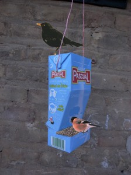

Food for the birds. A little change of the tetrapak and you can help the birds at wintertime.


Food for the birds. A little change of the tetrapak and you can help the birds at wintertime.

These are stones painted with finger paint. The zickzack out of felt.
Read more →
We made some stilts out of canes. It's a lot of fun and really noisy!
Read more →
You need some tubes of toilet paper. Push on one side the two edges until they meet in the middle. That is already the form of…
Read more →
This is way to learn how to tie shoes: you only need a piece of paperboard and a lace...and of course a kid which is willing…
Read more →
PATRÓN . To make your own memory game you have to collect the caps of water bottles. Print the TEMPLATE . Now you have to paint…
Read more →
Lisa An owl between books. Lisa does a lot of beautiful animals out of cardboard. I just copied. Lisa
Read more →